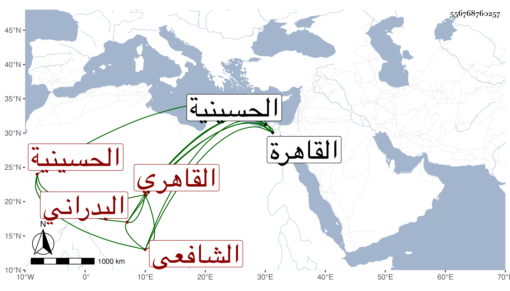

0902Sakhawi.DawLamic.ITO20230111-ara1.EIS1600.556768760257
Biography ID: 556768760257
194
محمد بن محمد بن الحسن بن علي بن عبد العزيز بن عبد الرحمن الشمس أبو الخير بن الجمال أبي الطاهر البدراني الاصل القاهري الشافعي الماضي أبوه ويعرف بابن البدراني . ولد سنة عشر وثمانمائة بالقاهرة ونشأ بها فحفظ القرآن والعمدة والمنهاج الفرعي وغيرهما وعرض على جماعة وأسمعه أبوه على الولي العراقي والواسطي والفوي وابن الجزري والكلو تأتي والقمني والمحلي سبط الزبير المدني في آخرين بل لا أستبعد إحضاره له عند ابن الكويك ومن يقاربه ، نعم وقفت على إجازة ابن الكويك والجمال الحنبلي والعز بن جماعة والكمال بن خير ، بل عائشة ابنة ابن عبد الهادي والجمال بن الشرائحي وعبد القادر الارموي وجماعة من المصريين والشاميين وغيرهم له في عدة استدعاآت ، ولما ترعرع أقبل على الاشتغال وأخذ الفقه عن الشرف السبكي وغيره والعربية والصرف عن العز عبد السلام البغدادي والشهاب الحناوي والفرائض عن البوتيجي وجماعة والاصول عن القاياتي والحديث عن شيخنا قرأ عليه شرح النخبة بتمامه وأذن له في إفادته ، وكتب الخط المنسوب وتخرج في الشروط بالقرافي وتعاني التوقيع وباشره بباب العلم البلقيني وقتا ثم بباب المناوي وغيرهما وناب في القضاء عن كل منهما وأم بجامع كمال بالحسينية وقرأ الحديث في وقف المزي بجامع الحاكم كلاهما بعد أبيه وكذا تنزل في سعيد السعداء ، وحج صحبة الرجبية ولزم مشهد الليث في كل جمعة غالبا فكان يقرأ في الجوق هناك وربما قرأ في غيره وكان ذلك السبب في مصاحبته لأبي الخير بن النحاس بحيث اختص به أيام ترقيه وتكلم عنه في شيء من جهاته وباع نسخة بخط أبيه من البخاري ومن الترغيب للمنذري حتى أخذ له فرسا ونحو ذلك ولم ينتج له أمر ، هذا مع تمام العقل والتودد والمروءة والتواضع والمشاركة في الفضائل وقد رأيته كثيرا وسمعت من فوائده وكان برجليه التواء . ومات في سنة ست وخمسين ودفن بجانب أبيه بتربة سعيد السعداء رحمه الله وإيانا .
